The Blender API in detail¶
Introduction¶
The Blender Python API mostly consists of a thin layer on top of the underlying Blender C/C++ data structures and methods. The underlying C/C++ code is used to automatically generate the Python API during the build process of the Blender executable, which means the API is always up-to-date with respect to the underlying code.
The API isn't the only part of Blender that uses Python. Large parts of the user interface, the import/export scripts and all addons are written in Python. It is therefore relatively easy to extend Blender with, say, new UI dialogs or an importer. This is one of the strengths of the Blender Python API.
Warning
Since the API provides access to Blender internals at a very low level you can screw up the Blender state quite easily, causing unexpected behaviour, data corruption or even crashes. In the worst case you can end up with a file that will no longer load in Blender at all, although that's rare.
So when working with Python scripting save your session to file often, preferably in a number of incremental versions.
In cases where you suspect Blender's internal state has been corrupted you can save the current file, restart Blender and then reopen the file to help ensure you start from a known-good state.
API modules¶
The Blender Python API is comprised of several modules, with bpy being the main one. But there's also useful routines in mathutils, bmesh and a few others.
Tip
The API documentation on these modules can be easily accessed from within Blender using Help > Python API Reference.
By default none of the API modules, not even bpy, is loaded in the environment where a script file runs, so you need to import the ones you need explicitly.
The Python Console does import quite a few things by defaults and also sets some useful variables, like C to access bpy.context and D to access bpy.data with less typing:
PYTHON INTERACTIVE CONSOLE 3.9.4 (default, Apr 20 2021, 15:51:38) [GCC 10.2.0]
Builtin Modules: bpy, bpy.data, bpy.ops, bpy.props, bpy.types, bpy.context,
bpy.utils, bgl, blf, mathutils
Convenience Imports: from mathutils import *; from math import *
Convenience Variables: C = bpy.context, D = bpy.data
>>> >>> D.objects.values()
[bpy.data.objects['Camera'], bpy.data.objects['Cube'], bpy.data.objects['Light']]
Developer settings¶
When developing Python scripts in Blender it can be useful to enable a few extra settings:
- The Python Tooltips under
Interface > Display > Python Tooltips. When enabled a tooltip will show the corresponding Python command or a path to the data for a UI element. 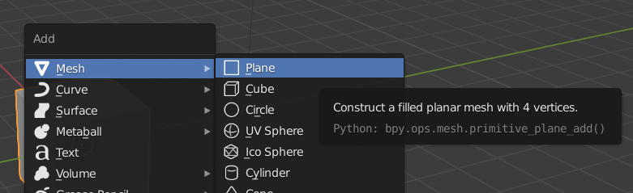 - The Developer Extras under
Interface > Display > Developer Extras. When enabled this provides multiple things:- The 3D viewport overlay for a mesh in edit mode will now have an extra setting
Indicesto show the low-level indices of selected vertices/edges/faces. This can be very useful when debugging Python code that works on mesh geometry. - The right-click menu for a UI item, such as a button or menu entry, will now also contain an entry called
Online Python Referencelinking to the relevant Python documentation page. - It will enable Operator Search, which will add entries to the
F3search menu for operators. These will be listed after the regular menu entries in the search results. - It adds a new menu option
Help > Operator Cheat Sheetthat will create a new text area calledOperatorList.txt, which contains all available operators (see below) and their default parameters. This list can give you a quick overview of the available operators, with the API documentation providing all the details.
- The 3D viewport overlay for a mesh in edit mode will now have an extra setting
As mentioned in the video in the introductory chapter the Info area can be useful if you want to inspect which Python calls Blender performs for certain operations. This certainly will not provide all the details in all cases, but can give some insight. You can either switch to the default Scripting workspace to check the Info area, or use the normal UI area operations to add/change an area to an Info area.
Data-blocks¶
The different types of data in Blender are stored in data-blocks. For example, there's Mesh, Object, Texture and Shader data-blocks, but there's quite a few more. One of the clever bits in the way Blender is programmed is that data-blocks contain enough information about their content (i.e. meta-data) to make them readable by both older and newer versions of Blender than the one they were written with. This meta-data system also allows the Python API for accessing those data-blocks to get generated without much manual development.
Data-blocks are available through Python per type under bpy.data, e.g. bpy.data.objects or bpy.data.meshes. The type of a data-block is the corresponding class under bpy.types, e.g.
>>> type(bpy.data.objects['Cube'])
<class 'bpy_types.Object'>
>>> bpy.types.Object
<class 'bpy_types.Object'>
Each type of data-block has its own set of attributes and methods, particular to that type. Learning the Blender Python API involves getting to know the details of the data-block types you want to work with and how they interact.
Blender keeps track of which data-blocks are no longer being referenced to decide when a data-block does not need to be saved (so-called garbage collection). Usually you don't need to explicitly interact with this system, but it is good to be aware that it is there, see this section below for more details.
Unique data-block names¶
Per type of data all the data-blocks need to have a unique name. This is enforced automatically by Blender when a data-block is created by appending a number to make the name unique. For example:
>>> bpy.data.meshes.new('my object')
bpy.data.meshes['my object']
>>> bpy.data.meshes.new('my object')
bpy.data.meshes['my object.001']
>>> bpy.data.meshes.new('my object')
bpy.data.meshes['my object.002']
This usually isn't an issue, but just something to be aware of when working with referencing objects by name, as the name of a data-block you created might actually be something different than you expect.
Objects and object data¶
When we use the word Object in these pages we mean one of the object types that can be present in a 3D scene, e.g. camera, mesh, light, etc. Such objects are of type bpy.types.Object and all have general properties related to their presence in the 3D scene. For example, their name, 3D transformation, visibility flags, parent, etc.
But a Light object needs to specify different properties than, say, a Camera object and these per-type properties are stored as object data. The object data can be accessed through the data attribute of an Object:
# Both lights and cameras are Objects
>>> type(bpy.data.objects['Light'])
<class 'bpy_types.Object'>
>>> type(bpy.data.objects['Camera'])
<class 'bpy_types.Object'>
# But their object data are of different types
>>> type(bpy.data.objects['Camera'].data)
<class 'bpy.types.Camera'>
>>> type(bpy.data.objects['Light'].data)
<class 'bpy.types.PointLight'>
# And have different attributes, relevant to that type
>>> dir(bpy.data.objects['Camera'].data)
[..., 'angle', ..., 'clip_start', ..., 'dof', ...]
>>> dir(bpy.data.objects['Light'].data)
[..., 'color', ..., 'distance', 'energy', ..., 'falloff_type', ...]
Sometimes you want to iterate over all objects in a scene, but only perform some operation on a specific type of object. You can use the type attribute for checking an object's type:
>>> bpy.data.objects['Camera'].type
'CAMERA'
>>> bpy.data.objects['Light'].type
'LIGHT'
Native Blender data structures¶
When working with the Python API will you frequently use internal Blender types that appear similar to regular Python types, like lists and dictionaries. However, the Blender types are not real native Python types and behave differently in certain aspects.
For example, the different collections of scene elements (such as objects or meshes) that are available under bpy.data are of type bpy_prop_collection. This type is a combination of a Python list and a dictionary, sometimes called an ordered dictionary, as it allows indexing by both array position and key:
>>> type(bpy.data.objects)
<class 'bpy_prop_collection'>
# Some of its methods match those of native Python data types
>>> dir(bpy.data.objects)
['__bool__', '__contains__', '__delattr__', '__delitem__', '__doc__', '__doc__',
'__getattribute__', '__getitem__', '__iter__', '__len__', '__module__',
'__setattr__', '__setitem__', '__slots__', 'bl_rna', 'find', 'foreach_get',
'foreach_set', 'get', 'items', 'keys', 'new', 'remove', 'rna_type', 'tag',
'values']
# Index by position
>>> bpy.data.objects[0]
bpy.data.objects['Camera']
# Index by key
>>> bpy.data.objects['Camera']
bpy.data.objects['Camera']
# (key, value) pairs
>>> bpy.data.objects.items()
[('Camera', bpy.data.objects['Camera']), ('Cube', bpy.data.objects['Cube']),
('Light', bpy.data.objects['Light'])]
Note that the position of an item in the collection, and hence its index, can change during a Blender session.
Inspecting values¶
One of the more annoying aspects when working in the Blender Python Console inspecting these kinds of values is that the elements in a bpy_prop_collection (or other Blender types) aren't printed by default, this in contrast to a regular Python dictionary. You need to, for example, cast to a list or call its values() method:
# Regular Python dict, prints both keys and values
>>> d = dict(a=1, b=2, c=3)
>>> d
{'a': 1, 'b': 2, 'c': 3}
# No items printed
>>> bpy.data.objects
<bpy_collection[3], BlendDataObjects>
# values() returns a list, so gets printed in detail
>>> type(bpy.data.objects.values())
<class 'list'>
>>> bpy.data.objects.values()
[bpy.data.objects['Camera'], bpy.data.objects['Cube'], bpy.data.objects['Light']]
# Difference in list() result:
>>> list(d)
['a', 'b', 'c']
# Returns dict *keys*
>>> list(bpy.data.objects)
[bpy.data.objects['Camera'], bpy.data.objects['Cube'], bpy.data.objects['Light']]
# Returns collection *values*
The choice for not printing the values inside a bpy_prop_collection is (most likely) that in many cases the collection will contain large numbers of objects, so printing them all would not be too useful, or might even make the UI non-responsive for a short time.
Data organization¶
In certain cases Blender uses a more elaborate data structure in cases where you might except low-level values, like lists. For example, the set of vertices that make up a mesh are only accessible as a collection of MeshVertex objects:
>>> m
bpy.data.meshes['Cube']
>>> type(m.vertices)
<class 'bpy_prop_collection'>
>>> len(m.vertices)
8
>>> m.vertices[0]
bpy.data.meshes['Cube'].vertices[0]
>>> type(m.vertices[0])
<class 'bpy.types.MeshVertex'>
>>> dir(m.vertices[0])
['__doc__', '__module__', '__slots__', 'bevel_weight', 'bl_rna', 'co', 'groups',
'hide', 'index', 'normal', 'rna_type', 'select', 'undeformed_co']
# Vertex coordinate (object space)
>>> m.vertices[0].co
Vector((1.0, 1.0, 1.0))
# Vertex normal
>>> m.vertices[0].normal
Vector((0.5773491859436035, 0.5773491859436035, 0.5773491859436035))
The reason for this is that there's several types of data associated with a single vertex, which are all centralized in a MeshVertex object. In short, Blender uses a so-called array-of-structs design. The alternative design choice would have been to have separate arrays for vertex coordinates, vertex normals, etc (which would be a struct-of-arrays design).
Vertices and matrices¶
The example above also shows that even a vertex coordinate is not accessed as a low-level Python data type, like a tuple, but by the Vector type (which is in the mathutils module). This has the advantage of providing many useful methods for operating on vector values:
>>> v = m.vertices[0].normal
>>> v
Vector((0.5773491859436035, 0.5773491859436035, 0.5773491859436035))
>>> v.length
0.999998137353116
# Return a new vector that's orthogonal
>>> w = v.orthogonal()
>>> w
Vector((0.5773491859436035, 0.5773491859436035, -1.154698371887207))
# Dot product (should be zero as v and w are orthogonal)
>>> v.dot(w)
0.0
# Note: v*w is element-wise product, not dot product!
>>> v*w
Vector((0.3333320915699005, 0.3333320915699005, -0.666664183139801))
# Cross product between two vectors
>>> v.cross(w)
Vector((-0.9999963045120239, 0.9999963045120239, 0.0))
# Swizzling (returning vector elements in a different order)
>>> w
Vector((0.5773491859436035, 0.5773491859436035, -1.154698371887207))
>>> w.zxy
Vector((-1.154698371887207, 0.5773491859436035, 0.5773491859436035))
The builtin mathutils module contains many useful data types and methods for working with 3D data, including vectors and matrices, but also different methods for working with transformations (like quaternion) and colors spaces.
# Transformation matrix for an object with uniform scale 2 and
# translation in Z of 3. These values will match with the Transform UI area
>>> o
bpy.data.objects['Cube']
>>> o.matrix_world
Matrix(((2.0, 0.0, 0.0, 0.0),
(0.0, 2.0, 0.0, 0.0),
(0.0, 0.0, 2.0, 3.0),
(0.0, 0.0, 0.0, 1.0)))
# Create a rotation matrix
>>> m = Matrix.Rotation(radians(90.0), 4, 'X')
>>> m
Matrix(((1.0, 0.0, 0.0, 0.0),
(0.0, 7.549790126404332e-08, -1.0, 0.0),
(0.0, 1.0, 7.549790126404332e-08, 0.0),
(0.0, 0.0, 0.0, 1.0)))
>>> v = Vector((1,2,3))
# Transform the vector using the matrix. Note the different outcomes
# depending on the multiplication order.
>>> m @ v
Vector((1.0, -2.999999761581421, 2.000000238418579))
>>> v @ m
Vector((1.0, 3.000000238418579, -1.999999761581421))
# Also, a 3-vector is assumed to have a fourth element equal to *one* when
# multiplying with a matrix:
>>> m = Matrix.Translation((4, 5, 6))
>>> m
Matrix(((1.0, 0.0, 0.0, 4.0),
(0.0, 1.0, 0.0, 5.0),
(0.0, 0.0, 1.0, 6.0),
(0.0, 0.0, 0.0, 1.0)))
>>> m @ Vector((1, 2, 3))
Vector((5.0, 7.0, 9.0))
>>> m @ Vector((1, 2, 3, 0))
Vector((1.0, 2.0, 3.0, 0.0))
Selections¶
In a lot of cases you want to operate on a set of objects. You can access (read only) the current selection with bpy.context.selected_objects:
>>> bpy.context.selected_objects
[bpy.data.objects['Cube'], bpy.data.objects['Plane']]
Changing the current selection can be done in several ways. Control over selection state per object can be controlled with the select_get() and select_set() methods:
>>> bpy.context.selected_objects
[]
>>> bpy.data.objects['Camera'].select_get()
False
>>> bpy.data.objects['Camera'].select_set(True)
>>> bpy.context.selected_objects
[bpy.data.objects['Camera']]
The full selection set can also be changed:
# Select all visible objects
>>> bpy.ops.object.select_all(action='SELECT')
# Deselect all objects
>>> bpy.ops.object.select_all(action='DESELECT')
# Toggle the selection state for each object
>>> bpy.ops.object.select_all(action='TOGGLE')
Note that the default mode for bpy.ops.object.select_all() when not specified is TOGGLE. Also note that the selection methods above operate only on objects that are currently visible objects in the scene (in terms of the outliner eye icon), just like for the selection hotkeys (like A) in the 3D viewport.
Often used values and operations¶
Scene¶
- Current scene:
bpy.context.scene(read-only)
Objects¶
- Active object:
bpy.context.active_object(read-only) - Selected objects:
bpy.context.selected_objects(read-only) - Delete selected objects:
bpy.ops.object.delete()
Camera¶
- Active camera object:
Scene.camera(this is the camera object, not camera object data) - Type:
Camera.type("PERSP", "ORTHO", ...) - Focal length:
Camera.lens(in mm) - Clipping distances:
Camera.clip_start,Camera.clip_end
Render settings¶
- Image resolution:
- Width:
Scene.render.settings.resolution_x - Height:
Scene.render.settings.resolution_y - Percentage:
Scene.render.settings.resolution_percentage
- Width:
- Output file:
Scene.render.filepath - Image output type:
Scene.render.image_settings.file_format("PNG", "JPEG", ...) - Number of samples per pixel (Cycles):
Scene.cycles.samples
Animation¶
- Current frame
Scene.frame_current - Frame range:
Scene.frame_start,Scene.frame_end - Frame rate:
Scene.render.fps
Object transformations¶
The matrix_world attribute of an Object contains the object-to-world transform that places the object in the 3D scene:
>>> o = bpy.context.active_object
>>> o
bpy.data.objects['Cube']
>>> o.matrix_world
Matrix(((1.3376139402389526, 0.0, 0.0, 0.3065159320831299),
(0.0, 1.3376139402389526, 0.0, 2.2441697120666504),
(0.0, 0.0, 1.3376139402389526, 1.2577730417251587),
(0.0, 0.0, 0.0, 1.0)))
Comparing this matrix with the values set in the Transform panel, you can see the location is stored in the right-most column of the matrix and the scaling along the diagonal. If there was a rotation set on this object some of these values would not be as recognizable anymore.
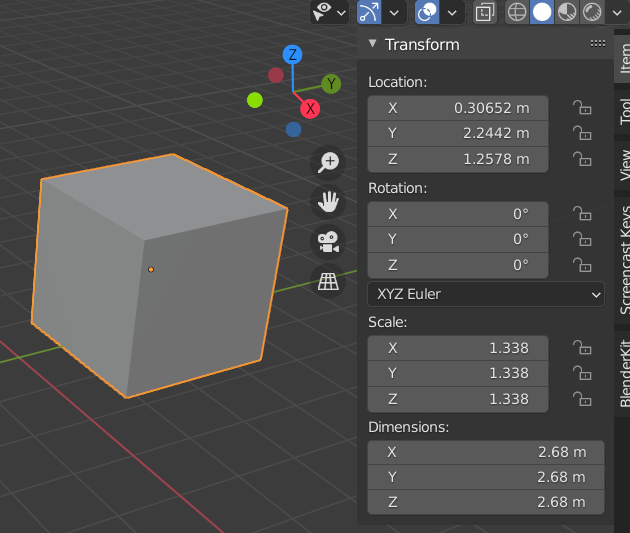
The location, rotation and scale values can also be inspected and set separately:
>>> o.location
Vector((0.3065159320831299, 2.2441697120666504, 1.2577730417251587))
>>> o.rotation_euler
Euler((0.0, 0.0, 0.0), 'XYZ')
>>> o.scale
Vector((1.3376139402389526, 1.3376139402389526, 1.3376139402389526))
>>> o.location = (1, 2, 3)
# Needs value in radians
>>> o.rotation_euler.x = radians(45)
>>> o.scale = (2, 1, 1)
>>> o.matrix_world
Matrix(((2.0, 0.0, 0.0, 1.0),
(0.0, 0.7071067690849304, -0.7071067690849304, 2.0),
(0.0, 0.7071067690849304, 0.7071067690849304, 3.0),
(0.0, 0.0, 0.0, 1.0)))
See the section on parenting below for some subtle effects on transformations in cases object parenting is used.
Geometry coordinates¶
Mesh geometry in Blender stores vertex coordinates (and other geometric information) in object-space coordinates. But a mesh (or object in general) will usually get transformed to a specific position, scaling and orientation in the scene. As described above the net transform from object-space to world-space coordinates, also called the object-to-world transform, is available through matrix_world. In cases where you need to have access to geometric data in world-space, say vertex coordinates, you need to apply the matrix_world transform manually.
For example, given the cube transformed as shown above, with vertex 7 selected (visible bottom-left in the image below):
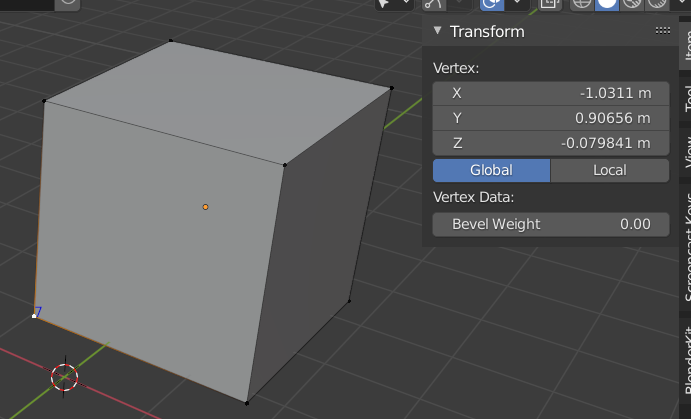
>>> o
bpy.data.objects['Cube']
>>> m = o.data
>>> o.matrix_world
Matrix(((1.3376139402389526, 0.0, 0.0, 0.3065159320831299),
(0.0, 1.3376139402389526, 0.0, 2.2441697120666504),
(0.0, 0.0, 1.3376139402389526, 1.2577730417251587),
(0.0, 0.0, 0.0, 1.0)))
# The object-space coordinate of this vertex
>>> m.vertices[7].co
Vector((-1.0, -1.0, -1.0))
# The world-space coordinate of this vertex, which matches
# what the Transform UI shows. Note the Global display mode
# select in the UI, if we select Local if will show (-1, -1, -1).
>>> o.matrix_world @ m.vertices[7].co
Vector((-1.0310980081558228, 0.9065557718276978, -0.07984089851379395))
API quirks¶
Working with the Blender Python API has some peculiarities compared to your average Python scripting. These have to do with the way the API is structured, but also how it interacts with the Blender internals. The API manual contains a lengthy page on some gotchas, but here we list some of the common ones.
Object modes¶
An object is always in one of several modes. These modes are the same ones you work with in the UI: Object mode, Edit mode, etc. The current mode for an object can be retrieved through the mode property:
>>> o = bpy.data.objects['Cube']
>>> o.mode
'OBJECT'
# <enter edit mode with TAB>
>>> o.mode
'EDIT'
Depending on the current mode of a mesh object certain data might not be up-to-date or even unavailable when accessing it through the Python API, this is especially true when an object is in Edit Mode. This is because the edit mode uses its own copy of the data to let you edit, which is synced with the underlying mesh data when going in and out of edit mode. See here for the relevant section in the API docs.
An example continuing with the Cube mesh above:
>>> o.mode
'OBJECT'
>>> m = o.data
>>> m
bpy.data.meshes['Cube']
# Check UV map data
>>> len(m.uv_layers[0].data)
24
# <enter edit mode with TAB>
>>> o.mode
'EDIT'
# UV map data now empty...
>>> len(m.uv_layers[0].data)
0
In most cases when working on low-level data such as mesh geometry you want the object to be in object mode (or use the bmesh module when you need the object be in edit mode). It's usually a good idea to add a check at the top of your script to verify the current mode is what you expect:
o = bpy.context.active_object
if o.mode != 'OBJECT':
raise ValueError('Active object needs to be in object mode!')
There are alternatives for still allowing a mesh to be in edit-mode when accessing its data from a script, see the API docs for details.
Interrupting (long-running) scripts¶
During script development you might get in a situation where your code is stuck in a loop, or takes much longer than you like. Interrupting a running script can usually be done by pressing Ctrl-C in the terminal console window:
>>> while True:
... pass
...
# Uh oh, execution stuck in a loop and the UI will now have become unresponsive
# Pressing Ctrl-C in the terminal console window interrupts script execution,
# as it raises a KeyboardInterrupt
Traceback (most recent call last):
File "<blender_console>", line 2, in <module>
KeyboardInterrupt
Interaction with the Undo system¶
When you undo certain operations Blender might re-create certain data, which might cause existing references to the original data to become invalid. This can be especially noticeable when working interactively in the Python Console. For example, with a cube object as active object in the 3D viewport:
# The Cube is the active object
>>> bpy.context.active_object
bpy.data.objects['Cube']
# Save a reference to it
>>> o = bpy.context.active_object
# <Grab the object in the 3D viewport and move it somewhere else>
# Object reference still valid
>>> o
bpy.data.objects['Cube']
# <Undo the object translation in the 3D viewport>
# Object reference has now become invalid
>>> o
<bpy_struct, Object invalid>
# Reason: object referenced under name 'Cube' has changed
>>> bpy.data.objects['Cube'] == o
False
>>> id(o)
140543077302976
>>> id(bpy.data.objects['Cube'])
140543077308608
# Will need to reacquire active object, or consistently use bpy.data.objects['Cube']
>>> o = bpy.context.active_object
>>> o
bpy.data.objects['Cube']
Operators¶
A special class of important API routines are the so-called operators. These are usually higher-level operations, such as adding a new cube mesh, deleting the current set of selected objects or running a file importer. As noted above many parts of the Blender UI are set up with Python scripts and in a lot of cases the operations you perform in the UI through menu actions or shortcut keys will simply call the relevant operator from Python to do the actual work.
The Info area will show most operators as they get execute, but you can also check when the Python Tooltips are enabled (see above) what API call is made for a certain UI element. For example, adding a plane mesh through the Add menu will call the operator bpy.ops.mesh.primitive_plane_add(), as the tooltip shows:
You can simply call the operator directly from Python to add a plane in exactly the same way as with the menu option:
>>> bpy.data.objects.values()
[]
>>> bpy.ops.mesh.primitive_plane_add()
{'FINISHED'}
# A plane mesh is now added to the scene
>>> bpy.data.objects.values()
[bpy.data.objects['Plane']]
Many of the operators take parameters, to influence the results. For example, with bpy.ops.mesh.primitive_plane_add() you can set the initial size and location of the plane (see the API docs for all the parameters):
>>> bpy.ops.mesh.primitive_plane_add(size=3, location=(1,2,3))
{'FINISHED'}
Info
Note that operator parameters can only be passed using keyword arguments.
Operator context¶
This is all very nice and powerful, but operators have a few inherent properties that can make them tricky to work with.
An operator's execution crucially depends on the context in which it is called, where it gets most of the data it needs. As shown above simple parameter values can usually be passed, but values like the objects to operate on are retrieved implicitly. For example, to join a set of mesh objects into a single one you can call the operator bpy.ops.object.join(). But the current context needs to be correctly set for the operator to work:
# We have no objects selected
>>> bpy.context.selected_objects
[]
>>> bpy.ops.object.join()
Warning: Active object is not a selected mesh
{'CANCELLED'}
# After selecting 3 objects
>>> bpy.context.selected_objects
[bpy.data.objects['Cube'], bpy.data.objects['Cube.001'],
bpy.data.objects['Cube.002']]
# Now it works
>>> bpy.ops.object.join()
{'FINISHED'}
As can be seen above an operator only returns a value indicating the execution status. When calling the operator in the Python Console as above some extra info is printed. But when calling operators from scripts the status return value is all you have to go on, as the extra message isn't printed when the script is executed. And in some cases the reason an operator fails can be quite unclear:
>>> bpy.context.selected_objects
[bpy.data.objects['Cube'], bpy.data.objects['Camera']]
>>> bpy.ops.mesh.intersect_boolean()
Traceback (most recent call last):
File "<blender_console>", line 1, in <module>
File "/usr/share/blender/2.92/scripts/modules/bpy/ops.py", line 132, in __call__
ret = _op_call(self.idname_py(), None, kw)
RuntimeError: Operator bpy.ops.mesh.intersect_boolean.poll() failed, context is incorrect
This merely shows that the so-called poll function failed. The poll function is used by operators to determine if they can execute in the current context, by checking certain preconditions on things like the selected object(s), the type of data or an object mode. In this case the bpy.ops.mesh.intersect_boolean() operator doesn't perform a boolean intersection on multiple meshes, but only on the faces of a single object in edit mode, but you can't tell from the error message (nor does the documentation make that clear):
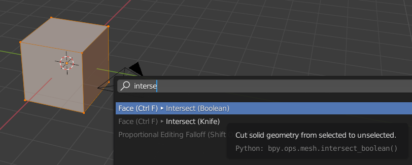
To actually perform a boolean intersection on two objects from a Python script requires us to do what we would be do in the UI: add a Boolean modifier on one of the objects and set its parameters. We could take advantage of the Python Tooltips to see which operator we need:
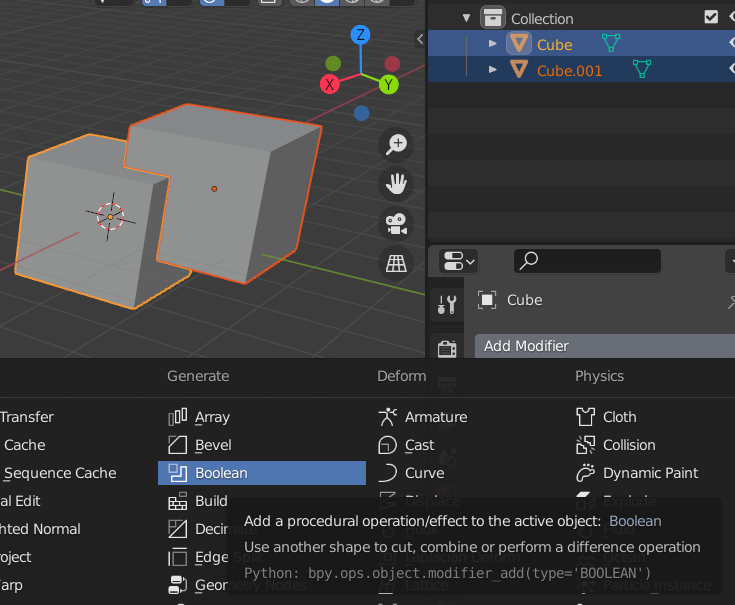
This would suggest that using bpy.ops.modifier_add(type='BOOLEAN') would be what we need, but then setting the required parameters on the modifier (i.e. the object to subtract) would become tricky. So for a boolean operation, and setting object modifiers in general, there's an easier way:
>>> o = bpy.data.objects['Cube']
# Add a modifier on the object and set its parameters
>>> mod = o.modifiers.new(name='boolmod', type='BOOLEAN')
>>> mod.object = bpy.data.objects['Cube.001']
>>> mod.operation = 'DIFFERENCE'
# At this point the modifier is all set up. We hide
# the object we subtract to make the boolean result visible.
>>> bpy.data.objects['Cube.001'].hide_viewport = True
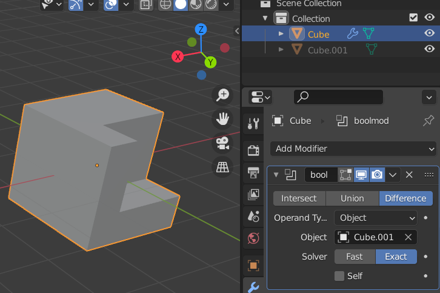
Unfortunately, certain operations can only be performed by calling operators. So there's a good chance that you will need to use them at some point when doing Python scripting. Hopefully this section gives some clues as how to work with them. See this section for more details on all the above subtleties and issues relating to working with operators.
The bpy.ops documentation also contains useful information on operators, including how to override an operator's implicit context with values you set yourself.
Meshes¶
One of the more common scene data types to work with from Python are 3D meshes. Meshes in Blender can contain polygons of an arbitrary number of vertices
(so-called N-gons), can contain wire edges and support extra layers of data, such as vertex colors and UV coordinates. We go into a fair amount of detail on how to create and access mesh data, in several ways. As usual, the Blender API docs on the Mesh type contain many more details, but we feel the discussion below is a good summary to get you started for many use cases.
Creating a mesh (high-level)¶
As shown earlier the Mesh.from_pydata(vertices, edges, faces) method
allows a simple and high-level way of creating a mesh. This method doesn't offer full control over the created
mesh and isn't very fast for large meshes, but it can be good enough in a lot of cases.
It takes three lists of values, or actually, any Python iterable that matches the expected form:
- vertices: a sequence of float triples, e.g.
[(1.0, 2.0, 3.0), (4, 5, 6), ...] - edges: a sequence of integer pairs (vertex indices), that define edges by. If
[]is passed edges are inferred from polygons - faces: a sequence of one or more polygons, each defined as a sequence of 3 or more vertex indices. E.g.
[(0, 1, 2), (1, 2, 3, 4), ...]
Note
The choice of how the mesh data is passed might incur an overhead in memory usage and processing time, especially when regular Python data structures, like lists, are used. An alternative would be to pass NumPy arrays.
For the examples below we assume that no explicit list of edges is passed. Edges will then be created implicitly based on the polygons specified, which is usually what is preferred. We discuss explicitly specifying edges below.
An example of creating a simple mesh:
# Create a mesh consisting of 3 polygons using 6 vertices
vertices = [
(0, 0, 0), (2, 0, 0), (2, 2, 0.2),
(0, 2, 0.2), (1, 3, 1), (1, -1, -1),
]
polygons = [
(0, 1, 2, 3), # Quad
(4, 3, 2), # Triangle
(0, 5, 1) # Triangle
]
m = bpy.data.meshes.new(name='my mesh')
m.from_pydata(vertices, [], polygons)
At this point we have created a new Mesh Python object, which corresponds to Object Data of type Mesh.
Object Data cannot be directly added to a scene, but needs to be referenced by a 3D Object:
# Create an object referencing the mesh data
o = bpy.data.objects.new(name='my mesh', object_data=m)
# Add the object to the scene
bpy.context.scene.collection.objects.link(o)
The resulting mesh and outliner entry looks like this:
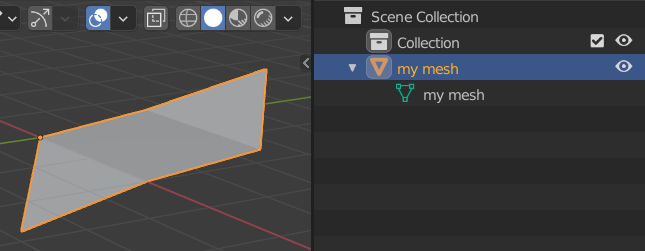
Careful: invalid data¶
Note that it is possible to set up a mesh with invalid/inconsistent data when setting the underlying arrays manually, as is the case here. This can cause weird behaviour or even crashes.
For example:
# 3 vertices
vertices = [ (0, 0, 0), (1, 1, 1), (-1, 2, -1) ]
# Invalid vertex index 3 used!
polygons = [ (0, 1, 2, 3) ]
m = bpy.data.meshes.new(name='my invalid mesh')
m.from_pydata(vertices, [], polygons)
o = bpy.data.objects.new(name='my invalid mesh', object_data=m)
bpy.context.scene.collection.objects.link(o)
When executing the above code a new mesh is added to the scene, but it will show as a triangle in the 3D viewport, instead of a quad. And even though that doesn't appear to be unreasonable behaviour in this case Blender will crash if we subsequently enter edit mode on the mesh!
So the lesson here is to be careful when specifying geometry using these low-level API calls. This actually applies to all parts of the Blender Python API in general.
In this case, to make sure a created mesh has valid data we can use the validate() method
on a Mesh. This will check the mesh data and remove any invalid values, e.g. by deleting
the polygon using non-existent vertex index 3 above. This might not result in a mesh that
matches what you want based on the data, but at least you can detect this situation and handle it without Blender crashing.
The validate() method has two issues to be aware of:
- The method returns
Truein case the mesh does not validate, i.e. when it has issues. More specifically, it returnsTruewhen changes were made to the mesh data to remove invalid values. - It will only report on the specific issues found when called with
validate(verbose=True)and then will only output to the console.
But it is still a good idea to always validate a mesh when creating it manually:
...
m = bpy.data.meshes.new(name='my invalid mesh')
m.from_pydata(vertices, [], polygons)
if m.validate(verbose=True):
print('Mesh had issues and has been altered! See console output for details')
In the example of the invalid mesh data above this results in these message being printed in the console output:
ERROR (bke.mesh): ../source/blender/blenkernel/intern/mesh_validate.c:351 BKE_mesh_validate_arrays: Edge 0: v2 index out of range, 3
ERROR (bke.mesh): ../source/blender/blenkernel/intern/mesh_validate.c:351 BKE_mesh_validate_arrays: Edge 3: v2 index out of range, 3
ERROR (bke.mesh): ../source/blender/blenkernel/intern/mesh_validate.c:605 BKE_mesh_validate_arrays: Loop 3 has invalid vert reference (3)
ERROR (bke.mesh): ../source/blender/blenkernel/intern/mesh_validate.c:782 BKE_mesh_validate_arrays: Loop 0 is unused.
ERROR (bke.mesh): ../source/blender/blenkernel/intern/mesh_validate.c:782 BKE_mesh_validate_arrays: Loop 1 is unused.
ERROR (bke.mesh): ../source/blender/blenkernel/intern/mesh_validate.c:782 BKE_mesh_validate_arrays: Loop 2 is unused.
ERROR (bke.mesh): ../source/blender/blenkernel/intern/mesh_validate.c:782 BKE_mesh_validate_arrays: Loop 3 is unused.
After validate() returns we can see in this case that invalid data was indeed removed:
>>> vertices = [ (0, 0, 0), (1, 1, 1), (-1, 2, -1) ]
>>> polygons = [ (0, 1, 2, 3) ]
>>> m = bpy.data.meshes.new(name='my invalid mesh')
>>> m.from_pydata(vertices, [], polygons)
>>> len(m.polygons)
1
>>> len(m.edges)
4
>>> len(m.vertices)
3
>>> m.validate()
True
>>> len(m.polygons)
0
>>> len(m.edges)
2
>>> len(m.vertices)
3
Creating a mesh (low-level)¶
A second, and more flexible, way of creating a mesh is using low-level calls
for setting the necessary data arrays directly on a Mesh object. This is especially useful in combination
with NumPy arrays, as this allows the creation of large meshes with relatively
high performance and low memory overhead.
Meshes in Blender are stored using 4 arrays, as attributes of the bpy.types.Mesh type:
-
vertices: vertex locations, each specified by 3 floats -
loops: contains the vertex indices used for defining polygons of a mesh, each polygon as a sequence of indices in theverticesarray -
polygons: defines the start index of each polygon as an index inloops, plus the length of each polygon in number of vertices -
edges: defines the edges of the mesh, using two vertex indices per edge
So to create a mesh at this level we need to set up the necessary values for these arrays. Here, we create the same mesh as in the previous section, using NumPy arrays for storing the data.
# Vertices (8): x1 y1 z1 x2 y2 z2 ...
vertices = numpy.array([
0, 0, 0, 2, 0, 0, 2, 2, 0.2, 0, 2, 0.2,
1, 3, 1, 1, -1, -1, 0, -2, -1, 2, -2, -1
], dtype=numpy.float32)
#
# Polygons, defined in loops
#
# List of vertex indices of all loops combined
vertex_index = numpy.array([
0, 1, 2, 3, # Quad
4, 3, 2, # Triangle
0, 5, 1 # Triangle
], dtype=numpy.int32)
# For each polygon the start of its indices in vertex_index
loop_start = numpy.array([
0, 4, 7
], dtype=numpy.int32)
# Length of each polygon in number of vertices
loop_total = numpy.array([
4, 3, 3
], dtype=numpy.int32)
We additionally also specify texture coordinates and vertex colors. This is something
that is not possible with the high-level from_pydata() API shown above. Note that
we need to specify these values per vertex per polygon loop.
# Texture coordinates per vertex per polygon loop
uv_coordinates = numpy.array([
0, 0, 1, 0, 1, 1, 0, 1, # Quad
0.5, 1, 0, 0, 1, 0, # Triangle
0, 1, 0.5, 0, 1, 1 # Triangle
], dtype=numpy.float32)
# Vertex color (RGBA) per vertex per polygon loop
vertex_colors = numpy.array([
1, 0, 0, 1, 1, 0, 0, 1, 1, 0, 0, 1, 1, 0, 0, 1,
0, 1, 0, 1, 0, 1, 0, 1, 0, 1, 0, 1,
1, 0, 0, 1, 0, 1, 0, 1, 0, 0, 1, 1,
], dtype=numpy.float32)
Next, we create a new mesh using the above arrays:
num_vertices = vertices.shape[0] // 3
num_vertex_indices = vertex_index.shape[0]
num_loops = loop_start.shape[0]
m = bpy.data.meshes.new(name='my detailed mesh')
# Vertices
m.vertices.add(num_vertices)
m.vertices.foreach_set('co', vertices)
# Polygons
m.loops.add(num_vertex_indices)
m.loops.foreach_set('vertex_index', vertex_index)
m.polygons.add(num_loops)
m.polygons.foreach_set('loop_start', loop_start)
m.polygons.foreach_set('loop_total', loop_total)
# Create UV coordinate layer and set values
uv_layer = m.uv_layers.new(name='default')
uv_layer.data.foreach_set('uv', uv_coordinates)
# Create vertex color layer and set values
vcol_layer = m.vertex_colors.new()
vcol_layer.data.foreach_set('color', vertex_colors)
# Done, update mesh object
m.update()
# Validate mesh
if m.validate(verbose=True):
print('Mesh data did not validate!')
# Create an object referencing the mesh data
o = bpy.data.objects.new(name='my detailed mesh', object_data=m)
# Add the object to the scene
bpy.context.scene.collection.objects.link(o)
Note
Passing a multi-dimensional NumPy array directly to foreach_set() will not work:
>>> vertices = numpy.array([
... (0, 0, 0), (2, 0, 0), (2, 2, 0.2), (0, 2, 0.2),
... (1, 3, 1), (1, -1, -1), (0, -2, -1), (2, -2, -1)
... ], 'float32')
>>> vertices.shape
(8, 3)
>>> m = bpy.data.meshes.new(name='my detailed mesh')
>>> m.vertices.foreach_set('co', vertices)
Traceback (most recent call last):
File "<blender_console>", line 1, in <module>
RuntimeError: internal error setting the array
However, passing a flattened array does work:
>>> m.vertices.foreach_set('co', vertices.flatten())
>>> [v.co for v in mesh.vertices]
[Vector((0.0, 0.0, 0.0)), Vector((2.0, 0.0, 0.0)), Vector((2.0, 2.0, 0.20000000298023224)), Vector((0.0, 2.0, 0.20000000298023224)), Vector((1.0, 3.0, 1.0)), Vector((1.0, -1.0, -1.0)), Vector((0.0, -2.0, -1.0)), Vector((2.0, -2.0, -1.0))]
Specifying edges when creating a mesh¶
In most cases we want to create a mesh consisting of only polygons and in that case don't need to specify edges. For certain mesh objects it can be of interest to also be able to specify edges explicitly, or even to create a mesh that consists only of vertices and edges between them. Edges can be used to add line segments that are not part of polygons.
We build upon the example mesh we created above by adding a set of 3 edges:
# Create a mesh consisting of 3 polygons using 8 vertices, with 3 extra edges
# that are not part of the polygons
vertices = [
(0, 0, 0), (2, 0, 0), (2, 2, 0.2), (0, 2, 0.2),
(1, 3, 1), (1, -1, -1), (0, -2, -1), (2, -2, -1)
]
edges = [
(5, 6), (6, 7), (5, 7)
]
polygons = [
(0, 1, 2, 3), # Quad
(4, 3, 2), # Triangle
(0, 5, 1) # Triangle
]
m = bpy.data.meshes.new(name='my mesh with edges')
m.from_pydata(vertices, edges, polygons)
o = bpy.data.objects.new(name='my mesh with edges', object_data=m)
bpy.context.scene.collection.objects.link(o)
The resulting mesh and outliner entry looks like this:
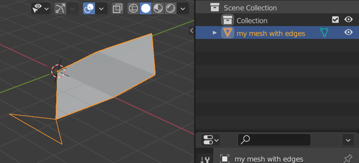
Note that even though we specified only 3 edges explicitly the polygons in the mesh implicitly define 8 more. These are the edges making up those polygons, with shared edges being present only once. In total this results in 11 edges in the mesh:
>>> len(m.edges)
11
For the second, low-level, method of mesh creation edges are handled slightly different.
Edges can be set explicitly by using Mesh.edges:
# Vertices (8): x1 y1 z1 x2 y2 z2 ...
vertices = numpy.array([
0, 0, 0, 2, 0, 0, 2, 2, 0.2, 0, 2, 0.2,
1, 3, 1, 1, -1, -1, 0, -2, -1, 2, -2, -1
], dtype=numpy.float32)
# Extra edges (3) not defined implicitly by polygons
edges = numpy.array([
5, 6, 6, 7, 5, 7
], dtype=numpy.int32)
#
# Polygons, defined in loops
#
# List of vertex indices of all loops combined
vertex_index = numpy.array([
0, 1, 2, 3, # Quad
4, 3, 2, # Triangle
0, 5, 1 # Triangle
], dtype=numpy.int32)
# For each polygon the start of its indices in vertex_index
loop_start = numpy.array([
0, 4, 7
], dtype=numpy.int32)
# Length of each polygon in number of vertices
loop_total = numpy.array([
4, 3, 3
], dtype=numpy.int32)
num_vertices = vertices.shape[0] // 3
num_edges = edges.shape[0] // 2
num_vertex_indices = vertex_index.shape[0]
num_loops = loop_start.shape[0]
m = bpy.data.meshes.new(name='detailed mesh with edges')
# Vertices
m.vertices.add(num_vertices)
m.vertices.foreach_set('co', vertices)
# Edges
m.edges.add(num_edges)
m.edges.foreach_set('vertices', edges)
# Polygons
m.loops.add(num_vertex_indices)
m.loops.foreach_set('vertex_index', vertex_index)
m.polygons.add(num_loops)
m.polygons.foreach_set('loop_start', loop_start)
m.polygons.foreach_set('loop_total', loop_total)
# Done, update mesh object
m.update()
# Validate mesh
if m.validate(verbose=True):
print('Mesh data did not validate!')
Here, we only specify the extra edges and not the polygon edges. But when we try to validate the mesh errors will be reported:
ERROR (bke.mesh): ../source/blender/blenkernel/intern/mesh_validate.c:628 BKE_mesh_validate_arrays: Poly 0 needs missing edge (0, 1)
ERROR (bke.mesh): ../source/blender/blenkernel/intern/mesh_validate.c:628 BKE_mesh_validate_arrays: Poly 0 needs missing edge (1, 2)
ERROR (bke.mesh): ../source/blender/blenkernel/intern/mesh_validate.c:628 BKE_mesh_validate_arrays: Poly 0 needs missing edge (2, 3)
ERROR (bke.mesh): ../source/blender/blenkernel/intern/mesh_validate.c:628 BKE_mesh_validate_arrays: Poly 0 needs missing edge (3, 0)
ERROR (bke.mesh): ../source/blender/blenkernel/intern/mesh_validate.c:628 BKE_mesh_validate_arrays: Poly 1 needs missing edge (4, 3)
ERROR (bke.mesh): ../source/blender/blenkernel/intern/mesh_validate.c:628 BKE_mesh_validate_arrays: Poly 1 needs missing edge (3, 2)
ERROR (bke.mesh): ../source/blender/blenkernel/intern/mesh_validate.c:628 BKE_mesh_validate_arrays: Poly 1 needs missing edge (2, 4)
ERROR (bke.mesh): ../source/blender/blenkernel/intern/mesh_validate.c:628 BKE_mesh_validate_arrays: Poly 2 needs missing edge (0, 5)
ERROR (bke.mesh): ../source/blender/blenkernel/intern/mesh_validate.c:628 BKE_mesh_validate_arrays: Poly 2 needs missing edge (5, 1)
ERROR (bke.mesh): ../source/blender/blenkernel/intern/mesh_validate.c:628 BKE_mesh_validate_arrays: Poly 2 needs missing edge (1, 0)
So the polygon edges, which we did not specify, are being reported. In this case the validate() method will correct this and add the missing edges. But having
errors reported for regular polygon edges makes it harder to detect any other issues with the mesh data.
So the Mesh.update() method provides the option calc_edges. By default this option is False,
but when set to True all edges in the mesh will be recalculated to be consistent with the available vertex indices,
polygons and extra edges set.
...
# Done, update mesh object and recalculate edges
m.update(calc_edges=True)
Validation now succeeds:
>>> m.validate(verbose=True)
False
Accessing mesh data (object mode)¶
Inspecting or using mesh data is straightforward. Here we use one of the
meshes created with the low-level methods above and retrieve some of its data. Note that Blender provides
a few values derived from the original arrays, such as loop_indices and vertices per polygon, which can be useful for
certain operations.
m = bpy.data.meshes['my detailed mesh']
len(m.vertices) => 8
len(m.polygons) => 3
# 2 triangles + 1 quad = 2*3 + 1*4 = 10
len(m.loops) => 10
# 8 implicit edges (for 2 triangles and 1 quad), shared edges only listed once
len(m.edges) => 8
m.vertices[7].co => Vector((2.0, -2.0, -1.0)) # Coordinate
m.vertices[7].normal => Vector((0.6.., -0.6.., -0.3..)) # Normal
m.vertices[7].select => True # Selected (edit mode)
m.polygons[2].index => 2 # Useful in 'for p in m.polygons'
m.polygons[2].loop_start => 7 # First index in loops array
m.polygons[2].loop_total => 3 # Number of vertices in loop
m.polygons[2].loop_indices => [7, 8, 9] # Indices in m.loops
m.loops[7].vertex_index => 0
m.loops[8].vertex_index => 5
m.loops[9].vertex_index => 1
m.polygons[2].vertices => [0, 5, 1] # Actual vertex indices
m.polygons[2].select => True # Selected (edit mode)
m.polygons[2].use_smooth => False # Smooth shading enabled
# These are automatically computed
m.polygons[2].area => 1.4142135381698608
m.polygons[2].normal => Vector((0.0, -0.707..., 0.707...))
m.polygons[2].center => Vector((1.0, -0.333..., -0.333...))
m.edges[0].vertices => [2, 3] # (bpy_prop_array)
Vertex colors¶
A mesh can have multiple sets of vertex colors. Each set has a name and for each vertex the associated color (but see below). By default meshes created in Blender do not have a vertex color layer.
>>> m
bpy.data.meshes['Cube']
>>> type(m.vertex_colors)
<class 'bpy_prop_collection'>
# Create a new vertex color layer
>>> vcol_layer = m.vertex_colors.new(name='My vertex colors')
>>> vcol_layer
bpy.data.meshes['Cube'].vertex_colors["My vertex colors"]
>>> len(m.vertex_colors)
1
# Name shown under Object Data -> Vertex Colors
>>> vcol_layer.name
'My vertex colors'
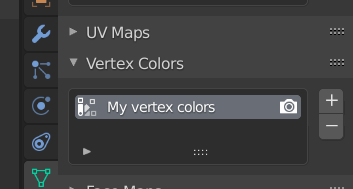
The vertex colors themselves are accessed through the data member:
>>> type(vcol_layer.data)
<class 'bpy_prop_collection'>
>>> len(vcol_layer.data)
24
>>> type(vcol_layer.data[0].color)
<class 'bpy_prop_array'>
>>> list(vcol_layer.data[0].color)
[1.0, 1.0, 1.0, 1.0]
>>> len(m.polygons)
6
>>> len(m.vertices)
8
>>> len(m.loops)
24
One thing to notice here is that the vertex color array has 24 entries. But the Cube object only has 8 vertices and 6 polygons. The reason the higher number of vertex colors is that Blender stores separate vertex colors per polygon. So the Cube has 6 polygons, each defined using 4 vertices, hence 6*4=24 vertex colors in total (which is the same number as the length of the loops array).
This is more flexible than what most 3D file formats allow, which usually only store one color per vertex. During import Blender will duplicate those colors to set the same color for a vertex in all polygons in which it is used. An example of how to take advantage of the added flexibilit is that we can set a random color per cube face by setting each of the 4 vertex colors of a face to the same color:
for i in range(6):
r = random()
g = random()
b = random()
for j in range(4):
vcol_layer.data[4*i+j].color = (r, g, b, 1)
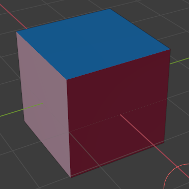
A slightly more Blender-like (and robust) way to write the above code would be to take advantage of the polygon loop indices:
for p in m.polygons:
r = random()
g = random()
b = random()
for i in p.loop_indices:
vcol_layer.data[i].color = (r, g, b, 1)
Active set¶
As noted above a mesh can have more than one layer of vertex colors. Among the sets present on a mesh there can be only one that is active. The active vertex color
layer set controls, for example, which vertex colors are visible in the 3D viewport and are edited in Vertex Paint mode. When adding a vertex color layer (and similar for UV maps described below) through the UI the active layer is changed to the newly added layer. Also, clicking in the Vertex Color layer UI changes the active layer. Below is a list of 2 vertex color layers on a mesh shown, of which Another layer is the active one.
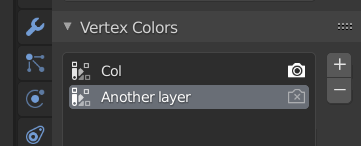
The camera icon right of the vertex color names controls which layer is used during rendering by default (and which is set independently of the active status). But in most cases the shader used on an object will explicitly choose a vertex color layer and so override the setting in the UI list.
Controling the active vertex color (or UV map) layer can be done using the active property:
>>> m.vertex_colors.active_index
1
>>> m.vertex_colors.active
bpy.data.meshes['Cube'].vertex_colors["Another layer"]
>>> m.vertex_colors.active = m.vertex_colors[0]
>>> m.vertex_colors.active
bpy.data.meshes['Cube'].vertex_colors["Col"]
UV coordinates¶
UV coordinates follow the same setup as vertex colors, but instead store a 2-tuple of floats per vertex per polygon. Note that just like for vertex colors UV coordinates are also specified per vertex per polygon.
Meshes created in Blender will already have a UV map called UVMap:
>>> m
bpy.data.meshes['Cube']
>>> len(m.uv_layers)
1
>>> m.uv_layers[0].name
'UVMap'
The actual UV values are once again stored under the data member:
>>> uv_map = m.uv_layers[0]
>>> uv_map
bpy.data.meshes['Cube'].uv_layers["UVMap"]
>>> type(uv_map.data)
<class 'bpy_prop_collection'>
>>> len(uv_map.data)
24
>>> type(uv_map.data[0])
<class 'bpy.types.MeshUVLoop'>
>>> uv_map.data[0].uv
Vector((0.375, 0.0))
In general, UV maps are either set through importing or edited within Blender using the UV Editor, although there can be valid reasons for wanting to control them through the Python API.
BMesh¶
There is another method in Blender for creating meshes and accessing their data: the so-called BMesh, which is implemented by the bmesh module and its BMesh class. BMesh is especially interesting when you want to perform more complex geometric operations on an existing mesh, or build up a mesh polygon-by-polygon instead of providing the full mesh in one go as a set of arrays as shown above. Here, we only give a brief overview of BMesh and refer to the API docs for all the details.
The differences of BMesh compared to working with the native mesh data structure we showed above:
-
A BMesh holds extra data on mesh connectivity, like the neighbours of a vertex, which can be easily queried for geometric editing. The trade-off is that a BMesh will use more memory to store all this extra data, but that is usually only a limiting factor for very large meshes.
-
It is somewhat slower to create a (large) mesh using a BMesh, as each mesh element (vertex, edge, polygon) takes a Python call to create, plus needs extra calls and Python values to set up.
-
A BMesh cannot be used directly in a scene, it first needs to be converted or copied back to a
Mesh(and so mesh data is present twice in memory at some point in time) -
A large set of high- and low-level geometric operations, such as merging vertices within a given distance, face splitting, edge collapsing or generating a convex hull, is provided in
bpy.opsandbmesh.utils. These operations would be tedious and error prone to script manually.
Here's a (verbose) example of create a BMesh from scratch that holds a single triangle and edge:
import bmesh
bm = bmesh.new()
# Create 3 vertices
v1 = bm.verts.new((0, 0, 0))
v2 = bm.verts.new((1, 0, 1))
v3 = bm.verts.new((0, 1, 1))
v4 = bm.verts.new((1, 1, 1))
# Add a triangle
bm.faces.new((v1, v2, v3))
# Add a line edge
bm.edges.new((v3, v4))
# Done setting up the BMesh, now copy geometry to a regular Mesh
m = bpy.data.meshes.new('mesh')
bm.to_mesh(m)
# Release BMesh data, bm will no longer be usable
bm.free()
# Add regular Mesh as object
o = bpy.data.objects.new('mesh', m)
bpy.context.scene.collection.objects.link(o)
A BMesh can also be created from an existing Mesh, edited and then copied back to the Mesh:
o = bpy.context.active_object
m = o.data
# Create a new BMesh and copy geometry from the Mesh
bm = bmesh.new()
bm.from_mesh(m)
# Edit some geometry
bm.verts.ensure_lookup_table()
bm.verts[4].co.x += 3.14
bm.faces.ensure_lookup_table()
bm.faces.remove(bm.faces[0])
# Copy back to Mesh
bm.to_mesh(m)
bm.free()
If a Mesh is currently in edit mode you can still create a BMesh from it, edit that and the copy the changes back, while keeping the Mesh in edit mode:
o = bpy.context.active_object
m = o.data
assert m.mode == 'EDIT'
bm = bmesh.new()
# Note the different call, i.e. NOT from_mesh()
bm.from_edit_mesh(m)
# <edit BMesh>
# Update edit-mesh of Mesh
bm.update_edit_mesh(m)
bm.free()
This can be useful when you're working in edit mode on a mesh and also want to run a script on it that uses BMesh, but don't want to switch in and out of edit-mode to run the script.
Note that there are some things to watch out for in synchronizing BMesh state to a Mesh.
Some examples of the geometric queries that you can do on a BMesh (see docs for more):
bm.verts[i].co # Vertex coordinate as mathutils.Vector
bm.verts[i].normal # Vertex normal
bm.verts[i].is_boundary # True if vertex is at the mesh boundary
bm.verts[i].is_wire # True if vertex is not connected to any faces
bm.verts[i].link_edges # Sequence of edges connected to this vertex
bm.verts[i].link_faces # Sequence of faces connected to this vertex
bm.edges[i].calc_length() # Length of the edge
bm.edges[i].is_boundary # True if edge is boundary of a face
bm.edges[i].is_wire # True if edge is not connected to any faces
bm.edges[i].is_manifold # True if edge is manifold (used in at most 2 faces)
v = bm.edges[i].verts[0] # Get one vertex of this edge
bm.edges[i].other_vert(v) # Get the other vertex
bm.edges[i].link_faces # Sequence of faces connected to this edge
bm.faces[i].calc_area() # Face area
bm.faces[i].calc_center_median() # Median center
bm.faces[i].edges # Sequence of edges defining this face
bm.faces[i].verts # Sequence of vertices defining this face
bm.faces[i].normal # Face normal
Materials¶
As shown in one of the introductory exercises it is possible to use Python to create a node-based shader. In most cases using the node-based editor in the UI is the preferred option due to its interactivity, but for certain cases it can be interesting to use Python. The general workflow for this is to create the necessary shader nodes, connected them through links as needed and then set the material on the relevant mesh.
# Create a new material
mat = bpy.data.materials.new("my material")
# Enable shader nodes on the material
mat.use_nodes = True
# Remove the default nodes
nodes = mat.node_tree.nodes
nodes.clear()
# Add a Principled BSDF shader node and set its base color
shader = nodes.new(type='ShaderNodeBsdfPrincipled')
shader.location = 0, 300
shader.inputs['Base Color'].default_value = (1,0,0,1)
# Add a Material Output node
node_output = nodes.new(type='ShaderNodeOutputMaterial')
node_output.location = 400, 300
# Add a link between the nodes
links = nodes.links
links.new(shader.outputs['BSDF'], node_output.inputs['Surface'])
# Add material to the mesh's material slots
mesh.materials.append(mat)
A node's inputs and outputs can be referenced by name. This can then be used to set values on inputs, or connect outputs to inputs, as shown. For example, for the Principled BSDF node above:
>>> shader.inputs.keys()
['Base Color', 'Subsurface', 'Subsurface Radius', 'Subsurface Color', 'Metallic',
'Specular', 'Specular Tint', 'Roughness', 'Anisotropic', 'Anisotropic Rotation',
'Sheen', 'Sheen Tint', 'Clearcoat', 'Clearcoat Roughness', 'IOR', 'Transmission',
'Transmission Roughness', 'Emission', 'Emission Strength', 'Alpha', 'Normal',
'Clearcoat Normal', 'Tangent']
>>> shader.outputs.keys()
['BSDF']
The location attributes set above are not strictly needed if you're not going to work on the shader network in the Shader Editor in the UI. But they help to make the node network layout somewhat visually pleasing.
Material slots¶
The last line in the Python code above adds the created material to the mesh's material slots. An object can have multiple materials assigned to it and each assigned material uses a so-called material slot. Each polygon in a mesh can only use a single material, by specifying the material index (i.e. slot) to use for that polygon. This allows different parts of a mesh to use different shaders.
By default all faces in a mesh will reference material slot 0. But here's an example of a cube mesh that uses 3 different materials:
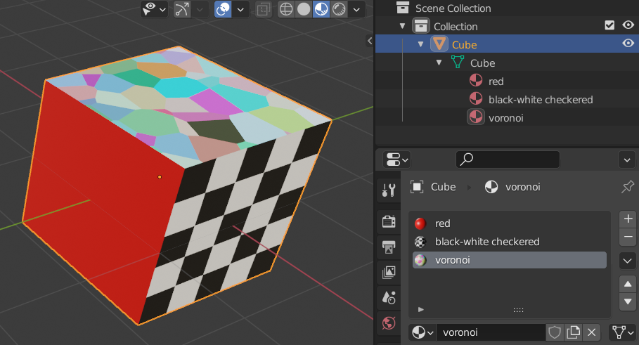
Inspecting the underlying material data:
# Get the mesh, as the material is linked to the mesh by default
>>> o = bpy.data.objects['Cube']
>>> m = o.data
# The material slots used
>>> list(m.materials)
[bpy.data.materials['red'], bpy.data.materials['black-white checkered'],
bpy.data.materials['voronoi']]
# Polygon -> slot index
>>> m.polygons[0].material_index
2
>>> m.polygons[1].material_index
0
>>> m.polygons[2].material_index
0
>>> m.polygons[3].material_index
0
>>> m.polygons[4].material_index
1
>>> m.polygons[5].material_index
0
Material indices can be set per polygon, or set as an array in one go:
# Material slot index for a single polygon
m.polygons[0].material_index = 0
# Set all polygon material indices
face_materials = [0, 1, 2, 2, 1, 0]
m.polygons.foreach_set('material_index', face_materials)
# Force an update of the mesh, needed in this case
m.update()
Custom properties¶
Sometimes it can useful to be able to control certain values that you use in a script from the UI. The most flexible, but also most complex, approach would be write an add-on. However, in quite a few cases there's a simpler alternative if all you need to control are simple Python values, like an int, float, string or list. From Python you can set custom properties on pretty much any Blender Python data block (see here for more details) and then access those values from the UI:
>>> o
bpy.data.objects['Cube']
>>> o['My prop'] = 123.4
>>> o['My 2nd prop'] = (1, 1, 0.5)
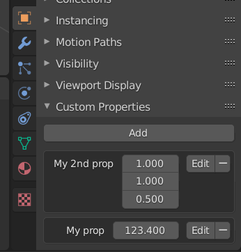
This works, of course, both ways: adding or editing a value from the UI will update the value(s) available through Python. You can then use these values in a script, for example to control a number of objects to create, set a 3D coordinate, etc. See here for more details and examples.
Into the deep end...¶
Here we go deeper into some more exotic topics, but which can be of interest with more advanced Python scripting and complex scene setups.
Data-block users and garbage collection¶
Blender uses a system based on reference-counting to decide when data-blocks have become unused and can get purged. In the short video below we show some of the details of this scheme:
The video shows the Orphan Data outliner mode, but there are several modes that can be used to get detailed insight into the current state of Blender internals:
-
The
Blender Filemode gives a high-level overview of a file's contents, including some of the more implicit data block types, such as Workspaces. -
The
Data APImode provides an even more detailed view. It is actually a great way to inspect all the gory details of Blender's internal data structures. It will show all data-blocks by type and their attributes. Some attributes can be even be edited in this outliner mode. -
The
Orphan Datamode shows data blocks that do not have any users and which will not be saved (unless they are marked to have a fake user). Some of the data-blocks you see here might not have been created by you, but are used by Blender internally, for example the Brushes.
Although the video only focused on materials, the way data-block lifetime is managed using the user counts is general to all types of data-blocks in Blender. But there are subtle differences in whether a data-block is really deleted or just has a link to it removed:
-
Whenever the term "unlink" is used it means that a link to that data-block is removed and its user count decreased, but the data-block itself will still be in memory. An example of this is clicking the X next to a mesh's material in the Material Properties.
-
If the UI uses the term "delete" it means the data-block is deleted immediately from memory. Any data-blocks linked from the deleted data-block will have their users count decreased. An example of this is deleting a Camera object in the 3D view: the Camera object's data-block is deleted from memory, but the Camera object data data-block (containing the actual camera settings) is still in memory, which you can check in the Orphan Data mode of the outliner.
The usage count of data-blocks can also be queried from Python:
# Two cube meshes using the same material
>>> bpy.context.scene.objects.values()
[bpy.data.objects['Cube'], bpy.data.objects['Cube.001']]
>>> bpy.data.materials['Material'].users
2
# Add a new material, set one of the cubes to use it
>>> bpy.data.materials['Material'].users
1
>>> bpy.data.materials['Material.001'].users
1
# <Delete Cube.001 object in the UI>
# Hmmm, still has a user?
>>> bpy.data.materials['Material.001'].users
1
# The reason is we deleted the Cube.001 *object*, but
# the Cube.001 *mesh* is still alive (as its usage count
# was merely decremented) and it still references the material
>>> bpy.data.objects['Cube.001']
Traceback (most recent call last):
File "<blender_console>", line 1, in <module>
KeyError: 'bpy_prop_collection[key]: key "Cube.001" not found'
>>> bpy.data.meshes['Cube.001']
bpy.data.meshes['Cube.001']
>>> bpy.data.meshes['Cube.001'].users
0
>>> bpy.data.meshes['Cube.001'].materials.values()
[bpy.data.materials['Material']]
The use_fake_user attribute of a data block controls whether a Fake user is set, similar to the checkbox in the UI.
Warning
In most cases you probably don't want to manually delete data blocks from a file and only use the normal UI operations for that. But it is possible for cases that need it. Truly purging a data block from Python can be done with the relevant remove() method, e.g.
>>> bpy.context.scene.objects.values()
[bpy.data.objects['Cube']]
>>> o = bpy.context.active_object
>>> o
bpy.data.objects['Cube']
>>> m = o.data
>>> m
bpy.data.meshes['Cube']
# Remove the Mesh data-block from the file
>>> bpy.data.meshes.remove(m)
>>> bpy.data.meshes.values()
[]
>>> bpy.data.objects.values()
[]
Note that in the case of deleting object data (in this case a Mesh) any Objects referencing that object data also get removed!
A second thing to note is the above code does not actually update the current Blender file on disk. That only happens on an explicit save action (e.g. through the File menu or using the relevant operator from Python).
A note on bpy.data, bpy.data.objects, ...¶
We have been using bpy.data.objects in most examples above to access objects in the scene. This is actually not completely clean, as bpy.data.objects holds all objects in the Blender file. Usually, the distinction doesn't matter as you only have one scene, but a Blender file can hold multiple scenes, each with their own set of objects:
# A file with two scenes, each with their own set of objects
>>> bpy.data.scenes.values()
[bpy.data.scenes['Scene'], bpy.data.scenes['Scene.001']]
# Current scene
>>> bpy.context.scene
bpy.data.scenes['Scene']
# And its objects
>>> bpy.context.scene.objects.values()
[bpy.data.objects['Bottom cube'], bpy.data.objects['Top Cube']]
# <Select different scene>
# Different current scene
>>> bpy.context.scene
bpy.data.scenes['Scene.001']
# And its objects
>>> bpy.context.scene.objects.values()
[bpy.data.objects['Bottom cube.001'], bpy.data.objects['Top Cube.001']]
# All objects in the file
>>> bpy.data.objects.values()
[bpy.data.objects['Bottom cube'], bpy.data.objects['Bottom cube.001'],
bpy.data.objects['Top Cube'], bpy.data.objects['Top Cube.001']]
Although objects can also be shared between scenes:
# Two scenes
>>> bpy.data.scenes.values()
[bpy.data.scenes['Scene'], bpy.data.scenes['Scene.001']]
# First scene, cubes are local to scene, torus is shared between scenes
>>> bpy.context.scene
bpy.data.scenes['Scene']
>>> bpy.context.scene.objects.values()
[bpy.data.objects['Torus'], bpy.data.objects['Bottom cube'],
bpy.data.objects['Top Cube']]
# Second scene, different cubes, torus is shared
>>> bpy.context.scene
bpy.data.scenes['Scene.001']
>>> bpy.context.scene.objects.values()
[bpy.data.objects['Bottom cube.001'], bpy.data.objects['Top Cube.001'],
bpy.data.objects['Torus']]
The point here is that bpy.data.objects, and every other attribute under bpy.data, holds values of the complete Blender file. Per-scene values are available through attributes of a Scene object, e.g. bpy.context.scene.objects. For certain use cases this distinction matters.
Parenting¶
An object's parent can be queried or set simply through its parent attribute, which needs to reference another Object (or None). But when parenting is involved the use of transformation matrices becomes somewhat more complex. Suppose we have two cubes above each other, the top cube transformed to Z=5 and the bottom cube to Z=2:
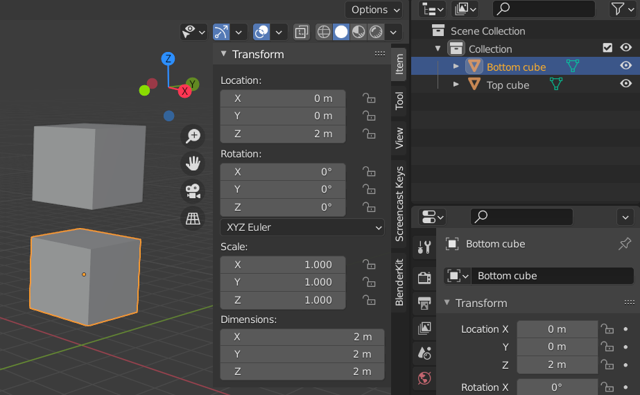
Using the 3D viewport we'll now parent the bottom cube to the top cube (LMB click bottom cube, Shift-LMB click top cube, Ctrl-P, select Object) and inspect the values in Python:
>>> bpy.data.objects['Bottom cube'].parent
bpy.data.objects['Top cube']
# The bottom cube is still located in the scene at Z=2,
# even after parenting, as is expected
>>> bpy.data.objects['Bottom cube'].matrix_world
Matrix(((1.0, 0.0, 0.0, 0.0),
(0.0, 1.0, 0.0, 0.0),
(0.0, 0.0, 1.0, 2.0),
(0.0, 0.0, 0.0, 1.0)))
If an object has a parent its matrix_local attribute will contain the transformation relative to its parent, while matrix_world will contain the resulting net object-to-world transformation. If no parent is set then matrix_local is equal to matrix_world.
Let's check the bottom cube's local matrix value:
# Correct, it is indeed -3 in Z relative to its parent
>>> bpy.data.objects['Bottom cube'].matrix_local
Matrix(((1.0, 0.0, 0.0, 0.0),
(0.0, 1.0, 0.0, 0.0),
(0.0, 0.0, 1.0, -3.0),
(0.0, 0.0, 0.0, 1.0)))
As already shown above the parent attribute can be used to inspect and control the parenting relationship:
>>> bpy.data.objects['Top cube'].parent
# None
>>> bpy.data.objects['Bottom cube'].parent
bpy.data.objects['Top cube']
# Remove parent
>>> bpy.data.objects['Bottom cube'].parent = None
At this point the two cubes are no longer parented and are at Z=2 ("Bottom cube") and Z=5 ("Top cube") in the scene. But when we restore the parenting relationship from Python something funny happens 1:
# Set parent back to what it was
>>> bpy.data.objects['Bottom cube'].parent = bpy.data.objects['Top cube']
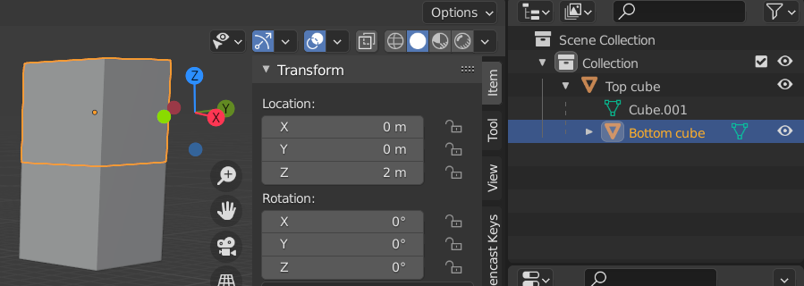
The reason for the different position of the cube called "Bottom cube" (which is now on top) is that when using the UI to set up a parenting relationship it does more than just setting the parent attribute of the child object. There's also something called the parent-inverse matrix. Let's inspect it and the other matrix transforms we've already seen for the current (unexpected) scene:
# Identity matrix, i.e. no transform
>>> bpy.data.objects['Bottom cube'].matrix_parent_inverse
Matrix(((1.0, 0.0, 0.0, 0.0),
(0.0, 1.0, 0.0, 0.0),
(0.0, 0.0, 1.0, 0.0),
(0.0, 0.0, 0.0, 1.0)))
# Hmmm, this places the "Bottom cube" 2 in Z *above* its parent at Z=5...
>>> bpy.data.objects['Bottom cube'].matrix_local
Matrix(((1.0, 0.0, 0.0, 0.0),
(0.0, 1.0, 0.0, 0.0),
(0.0, 0.0, 1.0, 2.0),
(0.0, 0.0, 0.0, 1.0)))
# ... so it indeed ends up at Z=7 as we saw (above "Top cube")
>>> bpy.data.objects['Bottom cube'].matrix_world
Matrix(((1.0, 0.0, 0.0, 0.0),
(0.0, 1.0, 0.0, 0.0),
(0.0, 0.0, 1.0, 7.0),
(0.0, 0.0, 0.0, 1.0)))
So what happened here? Apparently the matrix_local matrix changed from its value of Z=-3 as we saw earlier. The answer is that when you set up a parenting relationship using the UI the parent-inverse matrix is set to the inverse of the current parent transformation (as the name suggests) while matrix_local is updated to inverse(parent.matrix_world) @ to_become_child.matrix_world.
If we clear the parent value from Python and redo the parenting in the UI we can see this in the resulting transform matrices:
>>> bpy.data.objects['Bottom cube'].parent = None
# <parent "Bottom cube" to "Top cube" in the UI>
# Was identity, is now indeed the inverse of transforming +5 in Z
>>> bpy.data.objects['Bottom cube'].matrix_parent_inverse
Matrix(((1.0, -0.0, 0.0, -0.0),
(-0.0, 1.0, -0.0, 0.0),
(0.0, -0.0, 1.0, -5.0),
(-0.0, 0.0, -0.0, 1.0)))
# Was Z=2, is now 2-5
>>> bpy.data.objects['Bottom cube'].matrix_local
Matrix(((1.0, 0.0, 0.0, 0.0),
(0.0, 1.0, 0.0, 0.0),
(0.0, 0.0, 1.0, -3.0),
(0.0, 0.0, 0.0, 1.0)))
# Was Z=7
>>> bpy.data.objects['Bottom cube'].matrix_world
Matrix(((1.0, 0.0, 0.0, 0.0),
(0.0, 1.0, 0.0, 0.0),
(0.0, 0.0, 1.0, 2.0),
(0.0, 0.0, 0.0, 1.0)))
The reason for this behaviour is that when doing parenting in the 3D viewport you usually do not want the object that you are setting as the child to move. So the parenting matrices are adjusted accordingly when the parenting relationship is set up. But when we simply set parent from Python the matrix_local value is used as is, causing our bottom cube to suddenly move up, as it is used as the transform relative to its parent, while it actually would need a different value to stay in place.
There's actually quite a bit more going on with all the different parenting options available from the UI. See this page for more details.
-
The same thing happens when setting the parent in the UI using
Object Properties > Relations > Parent↩